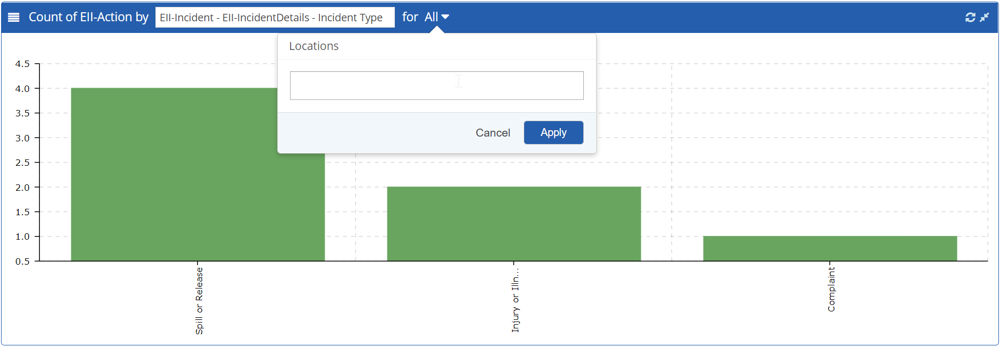

Charts
Key data is available in chart form. Different kinds of charts may be available, according to the configuration. For example:
- Count of App Items
- Count of Actions
You can filter the panels by available criteria, such as Type of App Item or Areas, for example.
View Charts
You can view all charts and customize the data shown.
- Select Charts from the main menu button.
Each chart may be filtered by date or location. - To filter data in a chart, do the following:
- Select the filter button on the top bar.
- Start typing in the text box, then select from the matches offered. Repeat to add more than one criteria. Click Apply.
- Click the Refresh button at the top right corner of the panel.

- To expand a chart to the full window, click the double arrow button on the top right. Click again to reduce it to original size.
- To apply a date filter, on the top navigation bar, enter From and To dates.
- To view the chart data in list form, click the List button in the top left corner of the graph.
- To drill down to data from the graph, select any graphical bar to show a list of the changes or actions it represents.